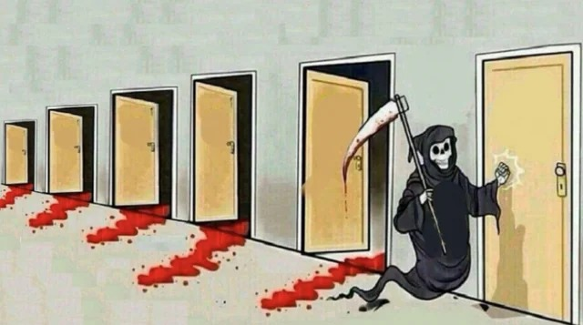
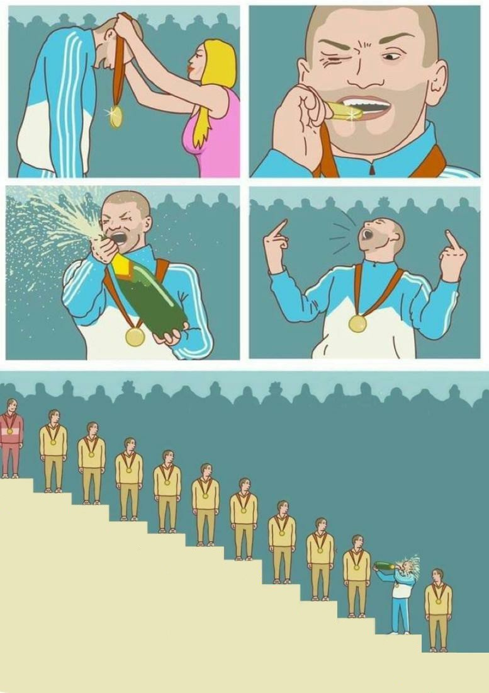

Vista previa de puertas.json y escalera.json sobre las imágenes base, con países y puestos de ejemplo. En el sitio, estos valores salen de data/pib.json.

laremontada.vanguarddevs.comPasamos a Omán en PIB total. En PIB por persona, Omán produce N veces más que Venezuela.

laremontada.vanguarddevs.comPuesto 72 en PIB total, pero puesto 134 de 192 en PIB por persona.
La descarga usa html-to-image desde un CDN; si abres este archivo sin conexión, se verán las etiquetas pero la descarga no funcionará. Abre el archivo con un servidor local (por ejemplo npx serve) para que la imagen no bloquee la captura.